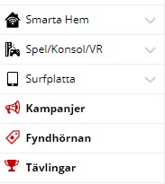
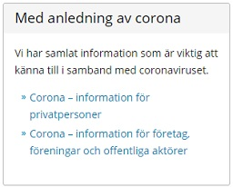
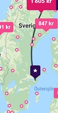

| Law |
Your explanation |
URL to example |
Example description |
Example image |
| Law of proximity |
Hur vår hjärna och ögon kan uppfatta design mellan element som är nära varandra respektive långt bort ifrån varandra. |
www.skatteverket.se |
Skatteverket använder sig av denna lag lägst ned på sin sida för att gruppera olika saker, t.ex deras "Hitta snabbt" länkar och viktiga datum. |
|
| Law of similarity |
Handlar om att när vi ser objekt som liknar varandra försöker hjärnan dra en parallell mellan de för att hjärnan vill att de ska hänga ihop.
Detta gäller framför allt om objekten har samma form och färg. |
www.inet.se |
Inet använder sig av denna lag för att i sin huvudmeny särskilja sitt ordinarie sortiment från erbjudanden och tjänster (att ikonerna är svarta/röda). |
 |
| Law of continuity |
Hur hjärnan uppfattar objekt som sitter ihop på ett visst sätt eller hur objekt fungerar som grupp. Denna metod används bland annat inom webbdesign och inredningsdesign. |
www.adlibris.com |
Jag klickade mig först in på studentlitteratur och valde sedan i den vänstra spalten Medicin & vård. Sedan kom det upp böcker som tillhör den kategorin. Detta är då ett exempel på denna lag på grund av att böckerna liknar och har en koppling till varandra. |
|
| Law of closure |
Hjärnan uppfattar exempelvis objekt som inte är i deras fullständiga form. Hjärnan ignorerar bristningen och ser det som ett helt objekt. |
www.ibm.com |
IBM använder sig av denna lag som syns på deras logotyp. Logotypen visar en del linjer som är horisontellt och hjärnan kan dra slutsatsen att det är ett helt objekt även fast objektet inte är helt. |
|
| Law of common fate |
Om det är flera objekt som är tillsammans uppfattar vi det som att de tillhör varandra. På grund av detta tror vi att de rör sig lika fort eller rör sig åt samma håll. |
www.inet.se |
Jag hittade denna i menyerna. Exempelvis när man klickar på bildskärm och sedan standardskärm. Inet använder sig av denna lag eftersom när man bläddrar mellan olika bilder för produkten så bläddrar också listan med miniatyrerna, vilket är ett bra sätt för dig att veta vart du är i listan |
 |
| Law of common region |
Flera objekt finns på samma yta som till exempel bildar en rektangel, vissa objekt i den rektangeln sitter ihop och har ett ännu starkare band till varandra. Till exempel att de rör sig samtidigt. |
www.skatteverket.se |
Skatteverket använder sig av denna lag för att dela in sina länkar i relevanta grupper, t.ex info gällande corona i en ruta för sig. |
 |
| Law of connectedness |
Denna lag menar att objekt tillhör varandra genom bland annat färger och linjer, detta ska tillsammans utgöra ett objekt. Detta skiljer sig mot objekt som inte är kopplade på samma sätt. |
www.momondo.se |
Momondo använder sig av denna lag genom att om man klickar på kartan från en destination till en annan så kommer det visas ett streck emellan, alltså det visar två stationer med en linje emellan. |
 |